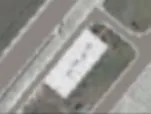

Identifiziertes Gebäude, Port Gellhorn
Don Panoz Gallery of Legends (echter Name)
Gebäude in Leonida, auf der Karte von GTA VI entdeckt, in der Stadt Port Gellhorn.

Das Wichtigste
Dieses Gebäude hat in GTA VI noch keinen bekannten Namen: Die Community bezeichnet es mit seiner realen Adresse, Don Panoz Gallery of Legends. Es liegt in der Stadt Port Gellhorn. In einem Trailer, einem Screenshot oder einem offiziellen Bild sichtbar oder benannt, ohne von Rockstar veröffentlichte Beschreibung: das ist der Status „In offiziellem Material gesichtet“ der Karte. Realer Ort, der es inspiriert zu haben scheint (von der Community erfasst): Don Panoz Gallery of Legends, CJXV+VX4 Sebring, Florida, USA. Es ist auf einem offiziellen Screenshot zu sehen, der auf dieser Seite gezeigt wird. Ganz in der Nähe verortet die Karte Gellhorn International Raceway (im Osten), Golfwagen (im Nordosten), 200 Paddock Wy (realer Name, im Osten).
Steckbrief
| Name | Don Panoz Gallery of Legends (realer Name, Name im Spiel unbekannt) |
|---|---|
| Kategorie | Identifiziertes Gebäude |
| Stadt | Port Gellhorn |
| Status | In offiziellem Material gesichtet |
| Realer Ort, der es inspiriert zu haben scheint | Don Panoz Gallery of Legends, CJXV+VX4 Sebring, Florida, USA (von der Community erfasst) Auf Google Maps ansehen ↗ |
| Position auf der Karte | x 1494, y 2426 (Karte zentrieren) |
| Quelle | Offizielle Screenshots und Trailer; erfasst von gtadb.org und seinen Mitwirkenden (CC BY 4.0) |
Auf der Karte von Leonida

Daten: GTA VI Landmarks Data, gtadb.org und seine Mitwirkenden, CC BY 4.0, für Leonidakit angepasst. Lizenz: creativecommons.org/licenses/by/4.0
Nächstgelegene Orte auf der Karte
Einen Fehler auf dieser Seite meldenWas bestätigt ist und wie wir es prüfenHerkunft und Credits
Der Rechner
Wie viel Spielzeit, um dich hier niederzulassen?
Ein Haus, ein Laden, eine Garage: Gib den Preis ein, den du dir vorstellst, dein Geld und was du pro Sitzung verdienst, und der Rechner sagt dir, wie lange es dauert.